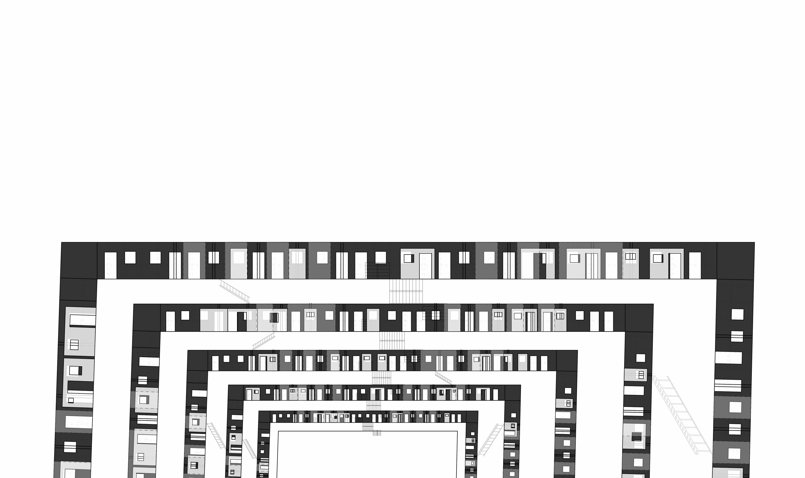

Architecture Design & Responsive Facade
Architecture Design
Designer
Individual
Architecture is always autonomously updating and interacting with residents or visitors. The building I work with is Longchang Building in Shanghai. Every time I visited there, I would find the facade different. The changing life scenarios and gradual additions contribute to the dynamic mask. What about the future? In this project, I tried to explore the futuristic interactive facade which promotes the living qualities.
The Facade Change between 2012 and 2015
The facade shows precisely how the residents live and make use of the building. Time plays an important role in the dynamics of the mask. The future mask will work functionally to solve the problem of circulation, sunlight, and greenery by the means of reflection and re-orientation.
Through adding new blocks according to the existing axis and rotating the blocks to reflect sunlight, the static facade becomes fluid and provides new living scenarios in the coming future.
For the evolving facade, different programs are integrated. The blocks are the same, while the way to integrate the blocks contributes to the diversity of the composition according to the residents' needs.
Facades of different time are properly connected under time. Every facade separately stands for its own time, while together reflects the history which the building have gone through. Despite the discrepancy of material and building technology, the juxtaposition ironically shows how social activities orient and link the differences. This is how architecture evolves in time.
Mask as Lighting Source
Mask as Living Units